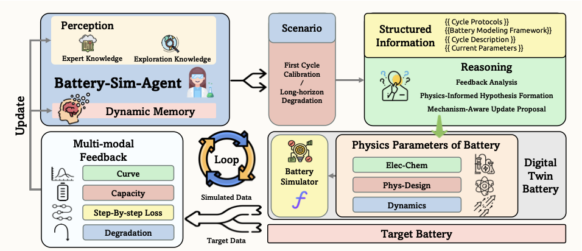
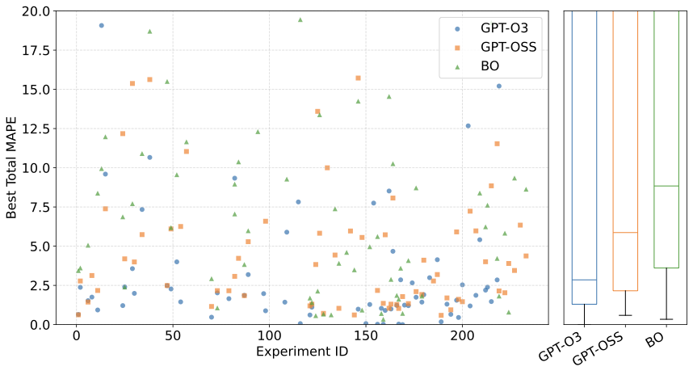
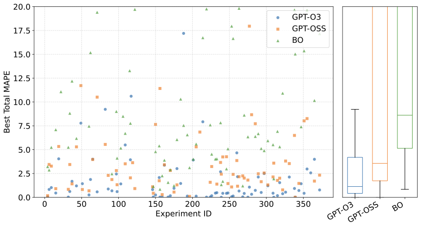
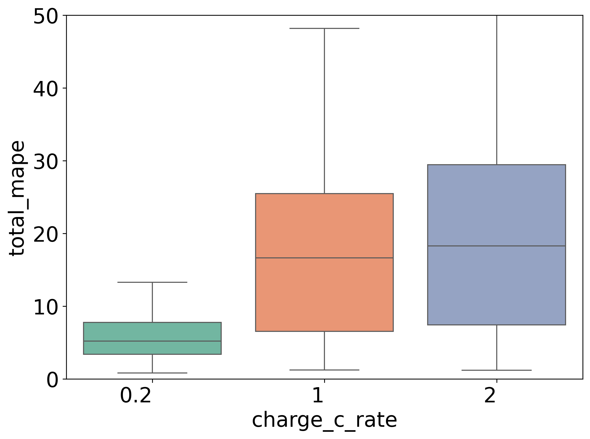
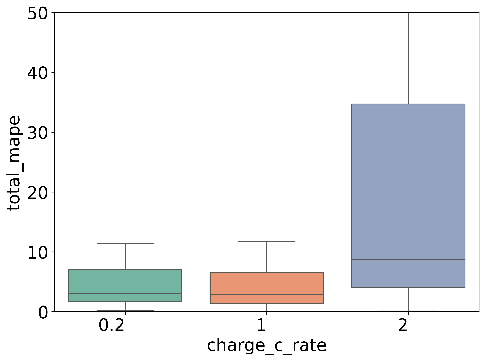
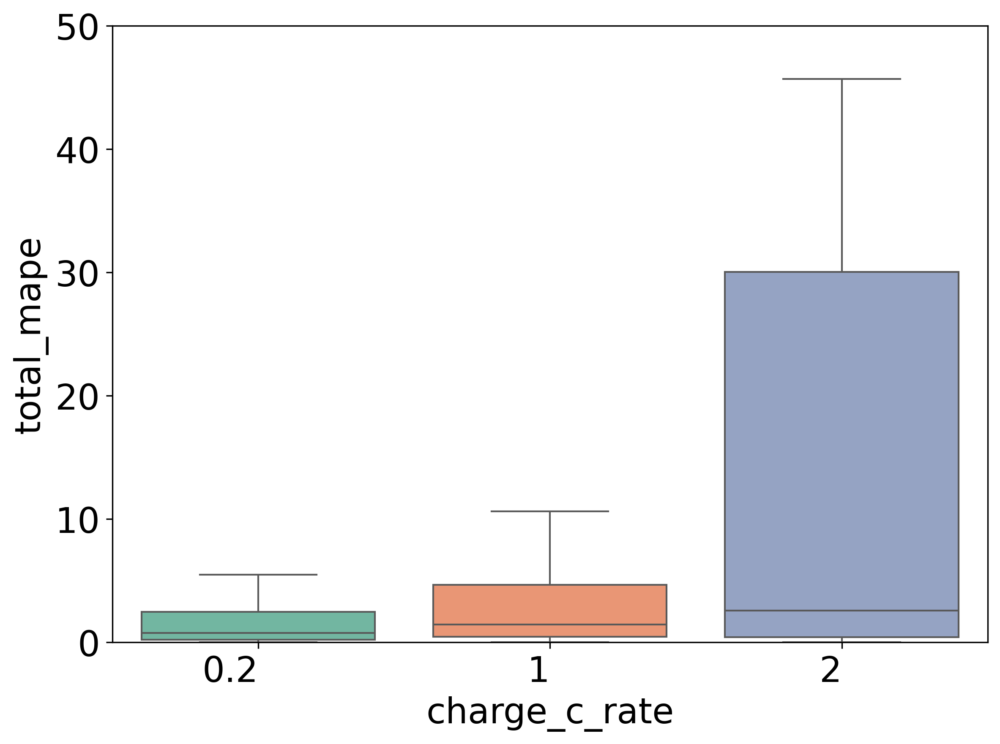
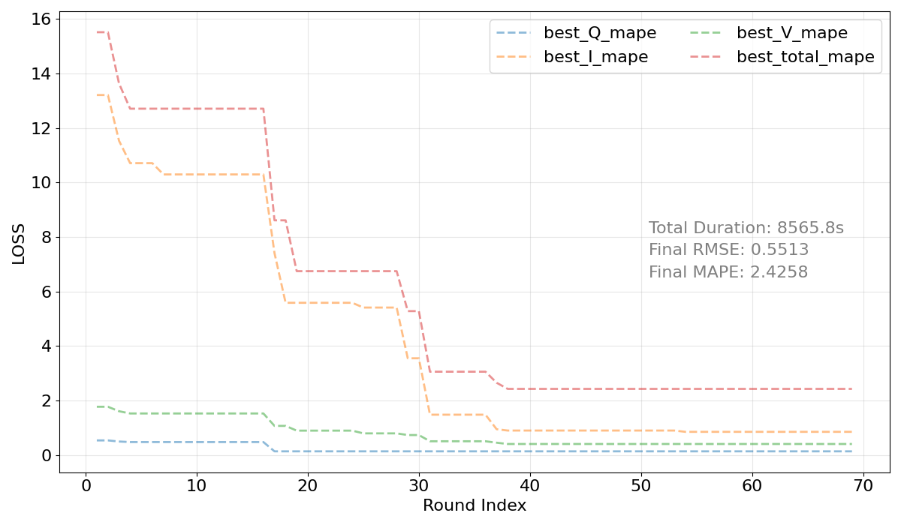
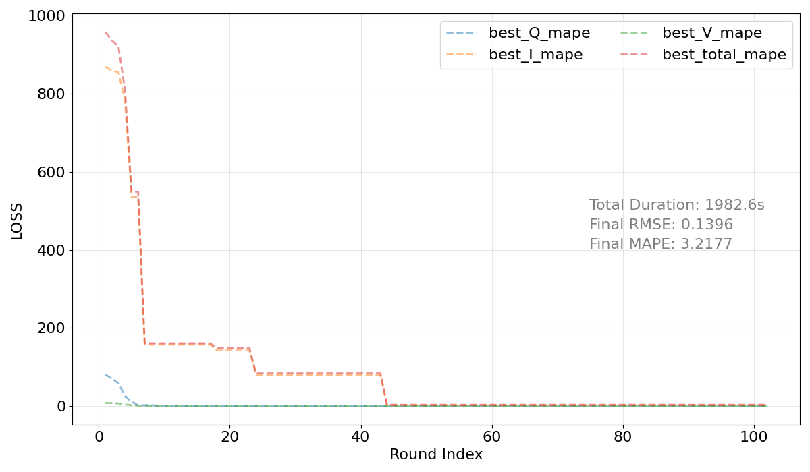

Parameterizing high-fidelity "digital twins" of batteries is a critical yet challenging inverse problem that hinders the pace of battery innovation. Prevailing methods formulate this as a black-box optimization (BBO) task, employing algorithms that are sample-inefficient and blind to the underlying physics. In this work, we introduce a new paradigm that reframes the inverse problem as a reasoning task, and present Battery-Sim-Agent, the first framework to deploy a Large Language Model (LLM) agent in a closed loop with a high-fidelity battery simulator.
The agent mimics a human scientist's workflow: it interprets rich, multi-modal feedback from the simulator, forms physically-grounded hypotheses to explain discrepancies, and proposes structured parameter updates. On a systematically constructed benchmark suite spanning diverse battery chemistries, operating conditions, and difficulty levels, our agent significantly outperforms strong BBO baselines like Bayesian optimization in identifying accurate parameters. We further demonstrate the framework's capability in complex long-horizon degradation fitting tasks and validate its practical applicability on real-world battery datasets.
| Aspect | Traditional BBO | Battery-Sim-Agent (Ours) |
|---|---|---|
| Search Paradigm | Blind Search | Hypothesis-Driven |
| Feedback Signal | Scalar Loss | Rich & Multi-modal |
| Interpretability | Low | High |
| Efficiency | Sample-Inefficient | Guided & Efficient |
Building accurate battery digital twins requires solving a fundamental inverse problem: inferring hidden microscopic parameters from observable macroscopic data. Traditional black-box optimization methods treat the simulator as an opaque oracle — they are blind to the underlying physics.
Battery-Sim-Agent reframes this as a reasoning task. Like a human scientist, the agent interprets simulation feedback, forms physical hypotheses, and proposes targeted corrections — turning brute-force search into intelligent scientific discovery.

Figure 1. The closed-loop workflow of Battery-Sim-Agent. The agent proposes parameters for the PyBaMM simulator. The simulator's output is then compared against target data to generate structured, multi-modal feedback, which the agent analyzes using its dynamic memory to reason about the next parameter update.
The agent receives a multi-modal feedback package in structured JSON format, containing fine-grained feature-space residuals, quantitative error metrics, and visual voltage curve overlays — bridging the gap between raw simulation data and actionable reasoning.
{
"residuals": { "capacity_mape": 0.08, "voltage_rmse": 0.05 },
"features": {
"cc_charge_time_mismatch_s": -120.5,
"plateau_shift_v": -0.02
},
"visual": "path/to/voltage_curve_overlay.png"
}Guided by its dynamic memory, the agent forms a causal hypothesis grounded in physics. This explicit reasoning step acts as a "cognitive check," reducing hallucinations and ensuring parameter updates are physically plausible.
The agent translates its hypothesis into a machine-actionable JSON update with a rationale, enabling targeted local adjustments rather than blind global exploration.
{
"updated_params": {
"Positive electrode reaction rate [s^-1]": "*1.2"
},
"rationale": "Increasing the positive reaction rate
by 20% to raise voltage plateau."
}Memory is initialized with human expert knowledge: physical parameter bounds and qualitative rules-of-thumb from domain literature.
Before optimization, the agent builds an "internal mental model" of parameter sensitivity through random perturbation experiments, learning rules like "perturbing electrode thickness by +10% strongly increases capacity."
We evaluate Battery-Sim-Agent on a comprehensive benchmark suite of 200+ tasks spanning 5 battery chemistries, 3 C-rates, and 2 difficulty modes, plus long-horizon degradation fitting and real-world battery data.

(a) Regular Mode. Multi-parameter perturbations.

(b) Extreme Mode. Single large-parameter perturbations.
Figure 2. Main results on first-cycle calibration. Our reasoning-based agent (GPT-O3) consistently outperforms its ablation (GPT-OSS) and Bayesian Optimization across both difficulty modes, achieving lower median error and significantly reduced variance.
| Mode | Method | Chen2020 | ORegan2022 | Ecker2015 | Prada2013 | Marquis2019 |
|---|---|---|---|---|---|---|
| Regular | Default | 159.09 | 160.47 | 108.42 | 79.16 | 122.60 |
| BO | 211.97 | 81.73 | 27.37 | 56.31 | 13.54 | |
| Agent-OSS | 38.05 | 46.34 | 7.63 | 23.74 | 9.55 | |
| Agent-O3 (Ours) | 12.60 | 34.18 | 0.77 | 5.97 | 1.27 | |
| Extreme | Default | 119.32 | 181.95 | 100.43 | 150.65 | 108.00 |
| BO | 159.41 | 84.55 | 137.31 | 17.05 | 8.42 | |
| Agent-OSS | 23.66 | 50.88 | 45.47 | 23.96 | 19.50 | |
| Agent-O3 (Ours) | 23.38 | 19.44 | 27.85 | 59.14 | 48.34 |

(a) Bayesian Optimization

(b) Battery-Sim-Agent-OSS

(c) Battery-Sim-Agent-O3
Figure 3. Our agent maintains superior performance across all C-rates (0.2C, 1C, 2C), with particularly notable improvements at higher rates where traditional optimization methods struggle.

(a) Long-Horizon Degradation Fitting

(b) Real-World Battery Data (CALCE)
Figure 4. Convergence analysis showing systematic error reduction over iterations for degradation fitting (left) and real-world battery data (right). Traditional methods like BO fail to converge in these complex scenarios.